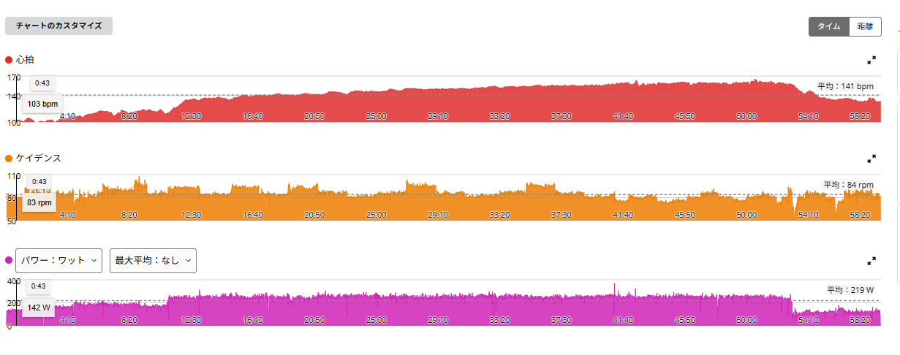

249W×40分。最初は楽だったのに、40分後には何も残っていなかった
昨日は315W×5分×4本に挑戦して、最後の4本目を完遂できなかった。久しぶりにえづくくらい呼吸がキツく、かなり強烈な高強度だった。
その翌日。今日もONにしたかったのでAIにメニューを相談したところ、提案されたのは「240〜250Wで40分の連続走」。SST20分×3のように途中でレストを入れるのではなく、一定出力で40分間ずっと踏み続けるメニューである。昨日は短い高強度だったので、今日は持続系。これが想像以上にキツかった。

59分04秒・NP232W・TSS69.5
- 全体31.72km / 59分04秒 / 平均219W / NP232W / IF0.844 / TSS69.5
- 心拍・回転平均141bpm / 最大165bpm / 平均84rpm
- 構成アップ約11分 → メイン40分 249W → 追加2分 235W → ダウン約6分
メインの40分は平均249W。狙っていた240〜250Wのほぼ上限で、最後まで大きく崩さず完遂できた。
最初の10分は、意外と楽だった
走り始めて最初の10分くらいは「これなら普通にいけそう」という感じだった。249W前後を維持すること自体はそれほど難しくなく、出力も比較的簡単に揃えられた。
ところが20分、30分、40分と時間が経つにつれて、同じ249Wなのにだんだんキツくなってくる。途中でレストがないので、少しずつ脚にも呼吸にも余裕がなくなっていった。メイン40分の平均心拍は149bpm、最大165bpm。パワーはほぼ一定なのに、後半になるほど身体側の負担だけが増えていく。

昨日と同じTSSなのに、中身は真逆だった
体感としては、昨日と今日でキツさの種類がまったく違った。昨日はとにかく呼吸。今日は「脚もキツいし、呼吸もキツい」が、時間をかけてジワジワ来る。
面白いのは、TSSがほぼ同じだということ。昨日が69.0で今日が69.5。数字の上ではほぼ同じ負荷である。ところがゾーンの中身を並べると、こうなる。
- 昨日（315W×5分×4本）TSS69.0 / パワーZ5以上 16分35秒 / 心拍Z4 12分51秒（24%）
- 今日（249W×40分）TSS69.5 / パワーZ5以上 14秒 / 心拍Z4 26分25秒（44%）
完全に逆である。昨日はパワーの上側を16分半使い、心拍が上がりきる前に各本が終わっていた。今日はパワーの上側をほとんど使っていないのに、心拍ゾーン4に26分25秒も置いている。えづいたのが昨日で、ジワジワ削られたのが今日、というのはそのまま数字に出ていた。
同じTSSでも中身はここまで違う。TSSだけを見て「同じ練習をした」と考えるのは危ないと思った。
40分終わって、そのまま続けてみた
- 追加の区間約2分 / 平均235W
40分が終わったところで「できるところまで続けてみよう」と思った。まだ少しはいけるかと思ったのだが、無理だった。追加できたのは約2分、平均235W。
40分を終えた時点で、思っていた以上に使い切っていたらしい。最初の10分では軽く維持できていた249Wが、40分後にはもう続けられない。同じパワーでも、時間によってこれだけ感じ方が変わるのは面白い。
3日連続ON。刺激の入れ方は全部変えた
- 9月7日SST20分×3 / TSS102.5 / パワーZ5以上1分24秒 / 心拍Z4 29分02秒
- 9月8日315W×5分×4本 / TSS69.0 / パワーZ5以上16分35秒 / 心拍Z4 12分51秒
- 今日249W×40分 / TSS69.5 / パワーZ5以上14秒 / 心拍Z4 26分25秒
3日ともONだが、SST・5分高強度・40分持続走と、それぞれ違う刺激を入れている。数字を並べると、狙っている場所が3日とも別だったことがはっきり分かる。連日ONにしているとはいえ、同じところを3回叩いたわけではない。
ローラーの柱が3本になった
最近の練習で、ローラーのメニューがだいぶ整理されてきた。高強度は315W×5分×4本。持続系は250W×40分。そしてSST20分×3。この3本立てである。
60/30も完全にやめるわけではないが、今のところ個人的には5分走や今回の持続走の方が「効いている」感覚がある。当面の目標は「ローラーで1時間300W」。高強度側では315W×5分×4本を攻略し、持続側では250W前後を休まず長く維持する。1時間300Wという最終形に必要なのは、たぶんこの両方だ。
特に今日のメニューはかなり気に入った。最初は普通に踏めるのに、逃げ場がないまま少しずつ苦しくなっていく。そして40分後には、もうほとんど残っていない。まじでキツかった。でも、こういうメニューはいい。またやる。
次に見るポイント
- 同じ249W×40分「残り10分がかなりキツい」が「キツいけど維持できる」に変わるか
- 40分後の余力今日は2分・235Wで力尽きた。ここが伸びたら時間を延ばす合図
- 心拍の上がり方同じ249Wで、後半の心拍が今日より低く収まるか
- 3本の柱SST・5分走・持続走を回して、どれが一番効いているか